Download CVD
Download CVDQuick Start Guide
This page provides basic instructions on how to use CVD.
It is assumed that the following versions of docker and docker-compose are already installed on your Linux machine:
- docker: Version 19.03 or higher
- docker-compose: Version 1.23 or higher
If docker and docker-compose are not installed, refer to the official Docker website or other page to install them.
Starting CVD
How to start CVD on a Linux machine
1
Clone the repository of CVD into the local Linux machine. Execute the following command in the terminal of the Linux machine.
$ git clone https://github.com/fujitsu/controlled-vocabulary-designer.git2
Move to the folder of the cloned CVD repository and execute the following command in the terminal of the Linux machine.'(*1)
$ docker-compose up -d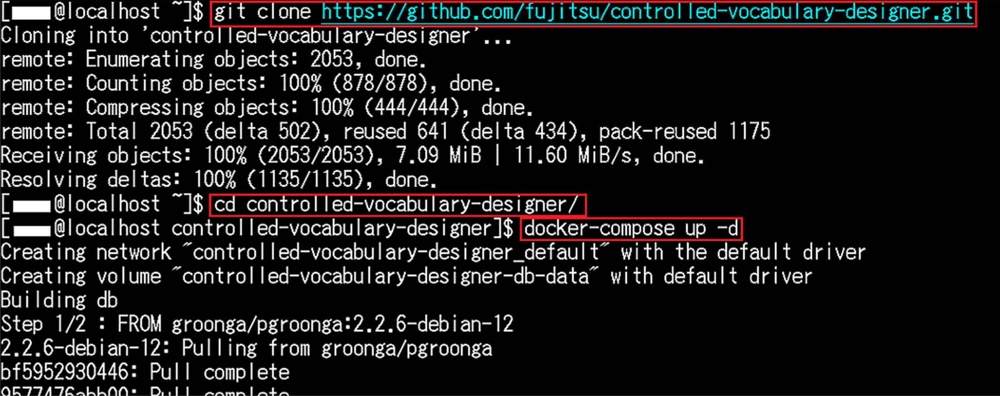
(*1) For use in a proxy environment, set HTTP_PROXY and HTTPS_PROXY to environment variables beforehand.
3
The startup is successful if the following is displayed in the terminal of the Linux machine.

Accessing CVD via a WEB browser
How to access the started CVD via a WEB browser
1
Access the following site on the WEB browser(*2) used in your work environment.
http://(hostname):10081/Or
http://(LinuxマシンのIPアドレス):10081/(*2) The following browsers are supported:
- Google Chrome
- Microsoft Edge
2
The access via the WEB browser is successful if the screen shown in the following figure is displayed.

Operating CVD on a WEB browser
How to operate CVD on a WEB browser
The following sections explain how to operate CVD on a WEB browser, using the following files in the sample-file folder in the cloned CVD repository:
- hensyugoi.csv
- hensyugoi_meta.csv
- sansyougoi.csv
Importing files
How to import files into CVD
1
Click Files (ファイル) > Open (開く) in the top left corner of the CVD screen to display the file import dialog box. Click the View (参照) button for “Editing Vocabulary (編集用語彙)” and select hensyugoi.csv.

2
Click the View (参照) button for “Editing Vocabulary_meta (編集用語彙_meta)” and select hensyugoi_meta.csv.
3
Click the View (参照) button for “Reference Vocabulary 1 (参照用語彙1)” and select sansyougoi.csv. Then, click OK below.
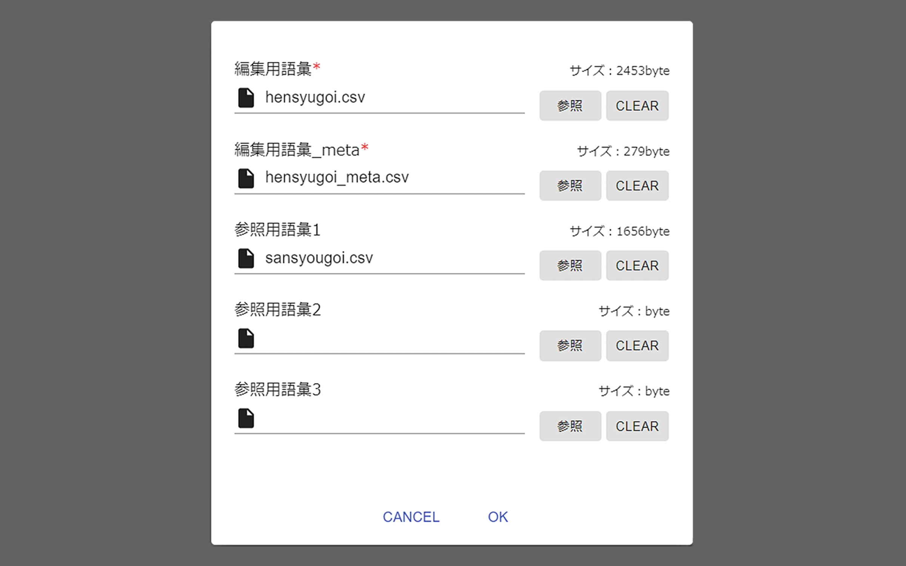
4
The file import is complete, when the dialog box disappears and terms are displayed as shown below. (Data in hensyugoi.csv is displayed on the screen.)

5
You can click “Basic Vocabulary Information (語彙基本情報)” at the top of the screen to check and edit the content of hensyugoi_meta.csv.

6
You can check the content of sansyougoi.csv by clicking “Reference Vocabulary 1 (参照用語彙1)” at the top of the screen. (The content of sansyougoi.csv can only be displayed and it cannot be edited.)

Editing terms
How to edit terms on CVD
1
Click the “Editing Vocabulary (編集用語彙)” tab at the top of the screen to display the content of hensyugoi.csv. For example, search the screen for the term “conbini (コンビニ).” You can either look at the screen or use the search box to look for the term. Clicking the search box displays a list of the terms contained in hensyugoi.csv.

2
Selecting “conbini (コンビニ)” in the search box displays “conbini (コンビニ)” at the center of the screen.
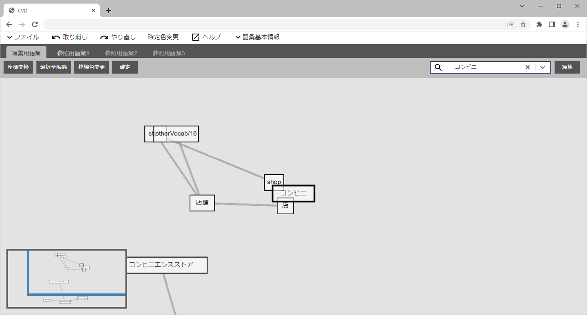
3
Move the display position of “conbini (コンビニ)” slightly, as it overlaps other terms and it is a little difficult to see. Drag “conbini (コンビニ)” to an appropriate location.
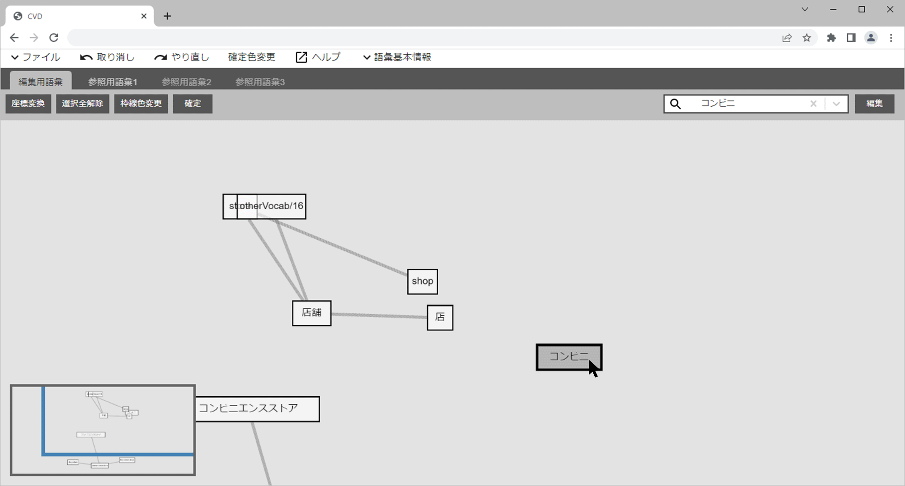
4
Color the outline border of “conbini (コンビニ)” to make its location more visible. Click “Change Border Color (枠線色変更)” at the top of the screen and select an appropriate color. In this example, “Red (レッド)” is selected. Then, the outline border of “conbini (コンビニ)” turns red.
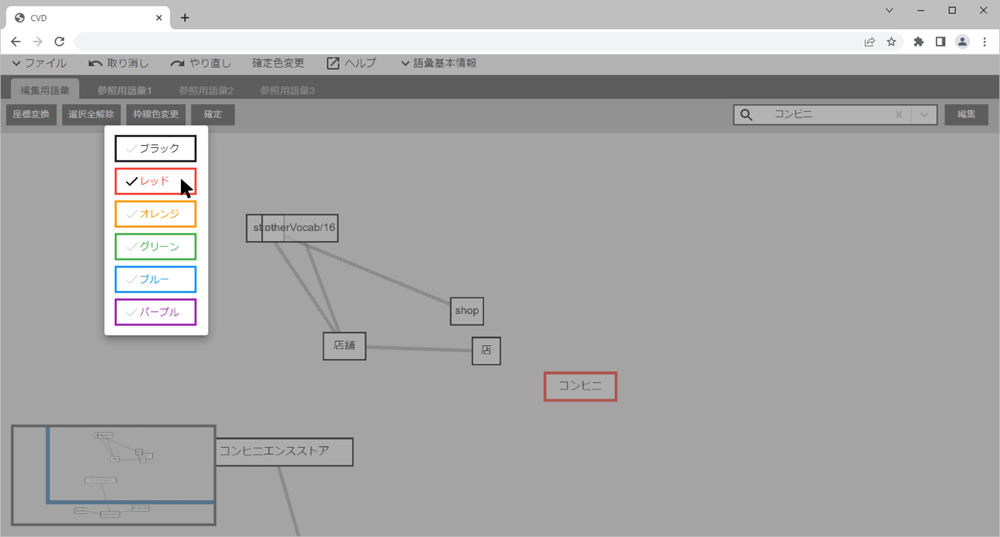
Editing a synonymous relationship and hierarchical relationship
How to edit the synonymous relationship and hierarchical relationship of “conbini (コンビニ)”
Placing the mouse pointer over “conbini (コンビニ)” displays three points. These points can be used to retrieve relationships of the term.

1
Editing a synonymous relationship
Set “convenience store (コンビニエンスストア)” as a synonym for “conbini (コンビニ),” for example.
Place the mouse pointer over “conbini (コンビニ),” choose either the left or right point of the term and drag it,
while holding down the mouse button. This allows you to draw a synonymous relationship line.
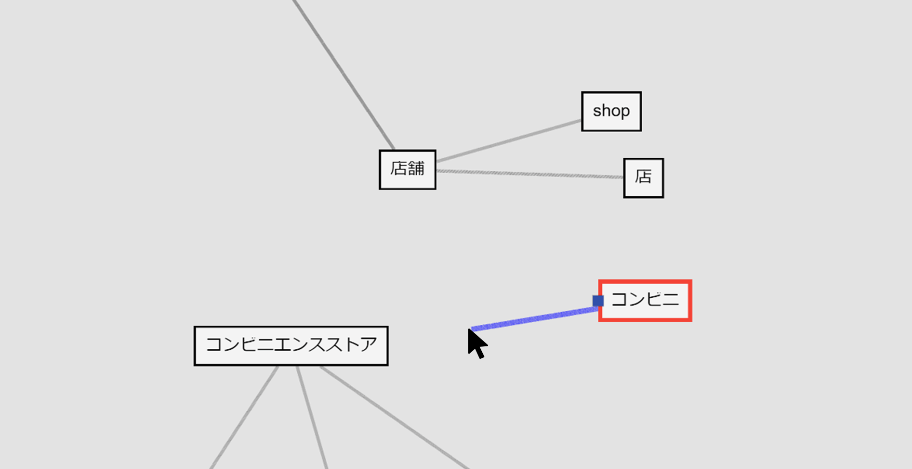
2
Drag and extend the synonymous relationship line, then release the mouse button over “convenience store (コンビニエンスストア).” The following dialog box will appear. Check it and click OK.
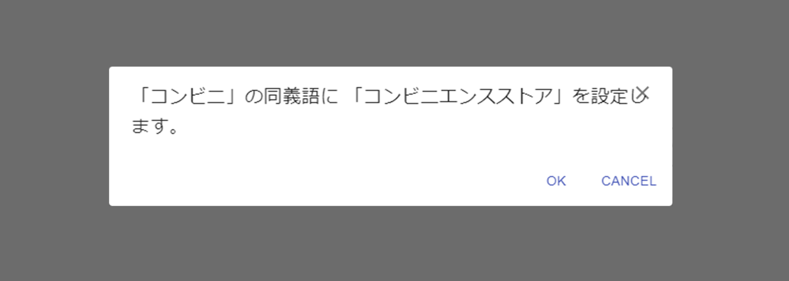
3
As shown below, “conbini (コンビニ)” and “convenience store (コンビニエンスストア)” are now connected, using a gray line. This gray line is a synonymous relationship line.

1
Editing a hierarchical relationship
For example, set “store (店舗)” as the hypernym of “convenience store (コンビニエンスストア).”
As “store (店舗)” is not visible, overlapping “http://otherVocabulary/16,” drag it with the mouse and move it to an appropriate position.
Placing the mouse pointer over “convenience store (コンビニエンスストア)” displays three points.
Hold down the mouse button over the top point and drag it to make a hierarchical relationship line appear.
2
Drag the hierarchical relationship line and release the mouse button over “store (店舗).” When the next dialog box appears, check it and click OK.
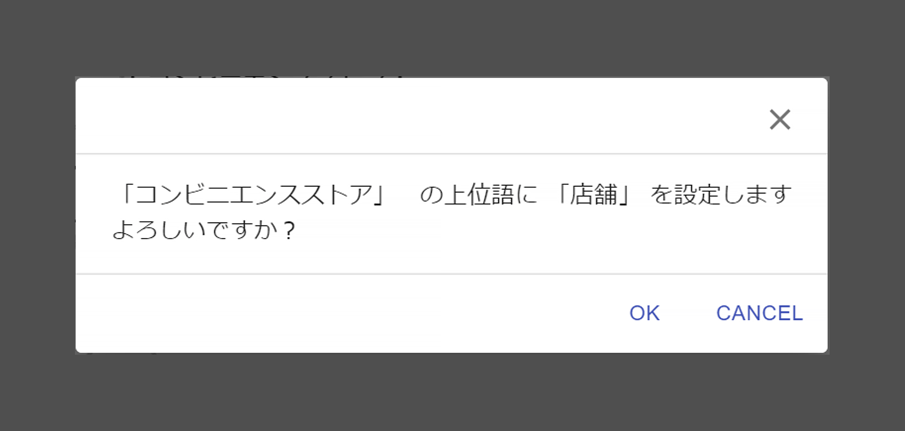
3
“convenience store (コンビニエンスストア)” is now connected to “store (店舗)” at the end of a black arrow line, as shown below. This line is a hierarchical relationship line. (The term at the arrow end is the hypernym.)

Displaying and editing detailed information
How to use the Edit panel (編集パネル) to display and edit detailed information
1
After clicking “convenience store (コンビニエンスストア),” click Edit (編集) in the top right corner of the screen.
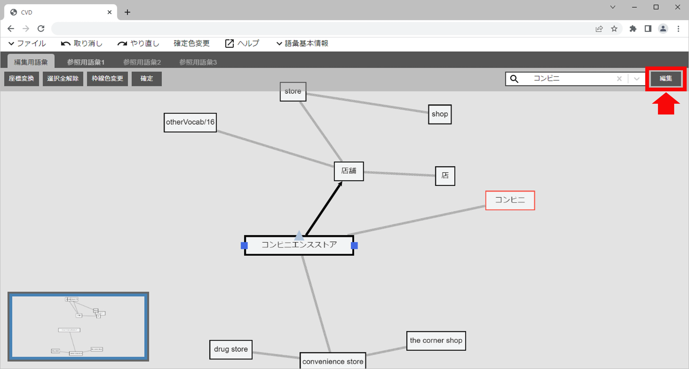
2
Information about “convenience store (コンビニエンスストア)” (hereinafter “Edit panel (編集パネル)”) is displayed.
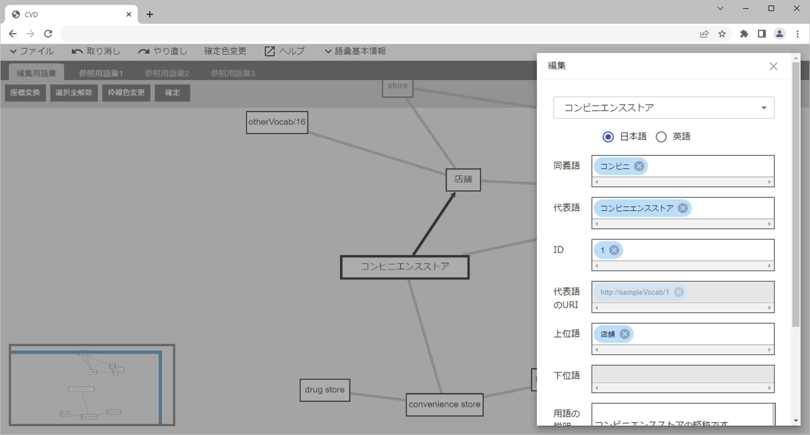
3
The Edit panel (編集パネル) also allows you to edit synonyms, representative words and hypernyms. Clicking a synonym text box displays candidate synonym results chosen by AI. You can either select a term that seems to be a synonym from them or enter a term manually to set a synonym. You can also set a hypernym in the same way.

4
The Edit panel (編集パネル) also allows you to change the URI of the representative word by editing its ID and edit the description of the term.
This example shows how to edit the description of the term.
In the Term description (用語の説明) text box, enter “Supplementary information about convenience store (コンビニエンスストアに関する補足情報です)” .
After finishing the editing, click the Apply (反映) button at the bottom of the box to save the edited data and close the Edit panel (編集パネル).

5
The same description of the term will be entered for all of its synonyms.
Open the Edit panel (編集パネル) when “convenience store (コンビニエンスストア)” is still selected,
and then select “conbini (コンビニ)” from the pull-down menu at the top of the Edit panel (編集パネル) to switch to “conbini (コンビニ).”
Check that the Term description (用語の説明) text box displays
“Supplementary information about convenience store (コンビニエンスストアに関する補足情報です),” which was entered earlier.
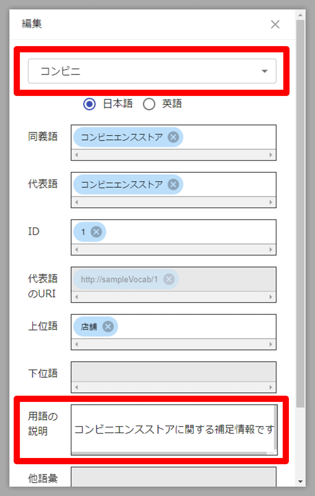
Exporting files
How to export the data that is currently being edited on CVD into a file
The following three types of files can be exported:
- CSV (term list)
- CSV (basic vocabulary information)
- RDF
All of them can be exported according to the same procedure. (A file format can be selected in the RDF export.)
The following example shows how to export CSV (term list).
Click Files (ファイル) > Save (保存) > Editing Vocabulary (編集用語彙) in the top left corner of the CVD screen. When the dialog box shown in the following figure appears, enter any file name and click OK to download the file.
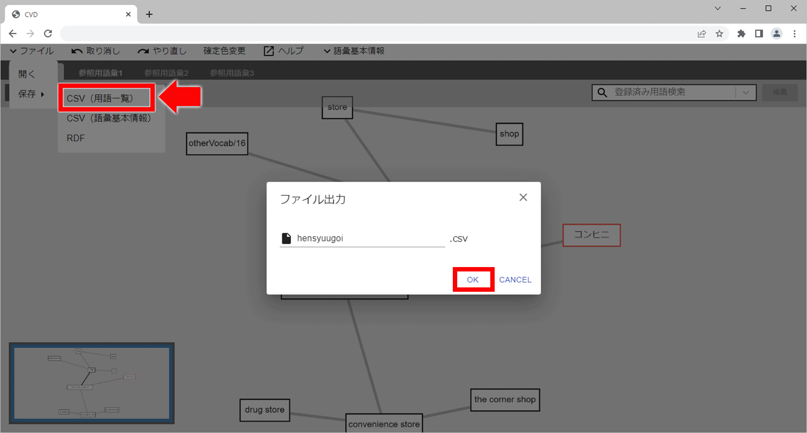